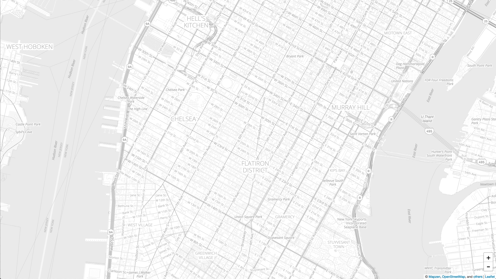

Retrieve Venues
The Who’s On First API allows you to query and retrieve Who’s On First data including venue data via a REST-ish interface.
You can use the API to retrieve venues. Say you want to retrieve venues in New York City’s Flatiron District. In this tutorial you will:
- Create
- Utilize Spelunker to find necessary information
- Retrieve data using the API
- Manipulate data
- Display results
Step 1: Create a Map
Utilize mapzen.js to make a map centered around New York City’s Flatiron District.
<title>My Web Map</title></p>
<!DOCTYPE html>
<html lang="en">
<head>
<title>My Web Map</title>
<meta charset="utf-8">
<link rel="stylesheet" href="https://mapzen.com/js/mapzen.css">
<script src="https://mapzen.com/js/mapzen.min.js"></script>
<style>
#map {
height: 100%;
width: 100%;
position: absolute;
}
html,body {margin: 0; padding: 0;}
</style>
</head>
<body>
<div id="map"></div>
<script>
L.Mapzen.apiKey = 'your-mapzen-api-key';
var map = L.Mapzen.map('map');
map.setView([37.7749, -122.4194], 12);
</script>
</body>
</html>
You will see a map that resembles the one below:
Step 2: Utilize Spelunker to find necessary information
Utilize the WOF Spelunker to look around the WOF database. The API’s methods are dispatched over HTTP with one or more query parameters, we can use the spelunker to find the parameters required to retrieve venues in the Flatiron District.
Use the Spelunker’s search and find the record corresponding to New York City. You will find this record.
Find the 8 digit number followed by .geojson, for the Flatiron District that number is 85869245. 85869245 is the Flatiron District’s ID. You will use this when making the API call.
Step 3: Retrieve data using the API
One of the available API methods is whosonfirst.places.getDescendants. The getDescendants method returns all the descendants for a Who’s On First ID. We have the Flatiron’s ID, so we can use this method.
We can also specify the specific placetype we want records to have. For this example, we can call
curl -X GET 'https://whosonfirst-api.mapzen.com/?method=whosonfirst.places.getDescendants&api_key=your-mapzen-api-key&id=85869245&placetype=venue&per_page=500’
This will retireve 500 venue descendants of the Flatiron District.
Step 4: Manipulate Data
Manipulate the data in whatever manner you would like. If you want to display it on a map, you could implement this code.
function runWhosOnFirstAPI() {
// Setup the API key
mapzen.whosonfirst.api.set_handler('authentication', function() {
return api_key;
});
// Get all the venues in the Flatiron District
// See: https://mapzen.com/documentation/wof/methods/#whosonfirst.places.getDescendants
var parent_id = randomLocation[2];
var method = 'whosonfirst.places.getDescendants';
var data = {
id: parent_id,
per_page: 500,
extras: 'geom:' // this gets us lat/lng coords
};
// Ok now we actually call the API
mapzen.whosonfirst.api.execute_method_paginated(method, data, onsuccess, onerror, onprogress);
document.getElementById("whosFirstDescendantKey").innerHTML = randomLocation[2];
document.getElementById("whosFirstDescendantLocation").innerHTML = randomLocation[4];
};
Step 5: Display Results
Utilize the results whatever way you see fit, here we want to display the results on a map we do this with this function.
var onprogress = function(rsp) {
//console.log(rsp);
for (var i = 0; i < rsp.places.length; i++) {
var place = rsp.places[i];
show_venue(place);
}
}
You should now see a map that resembles the one below:
This is only possible way you could use WOF. Explore our API documentation and other tools to discover other possible methods.